빠르면 빠를수록 좋은 충치치료
충치치료는 가장 기본적이지만 가장 중요한 치료로
조기에 치료할수록 비용과 시간은 물론, 통증도 줄일 수 있습니다
충치의 진행과정과 치료방법
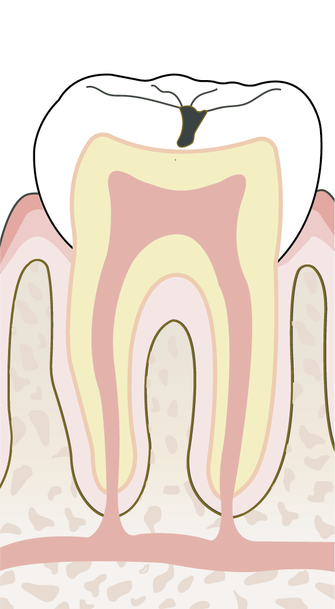
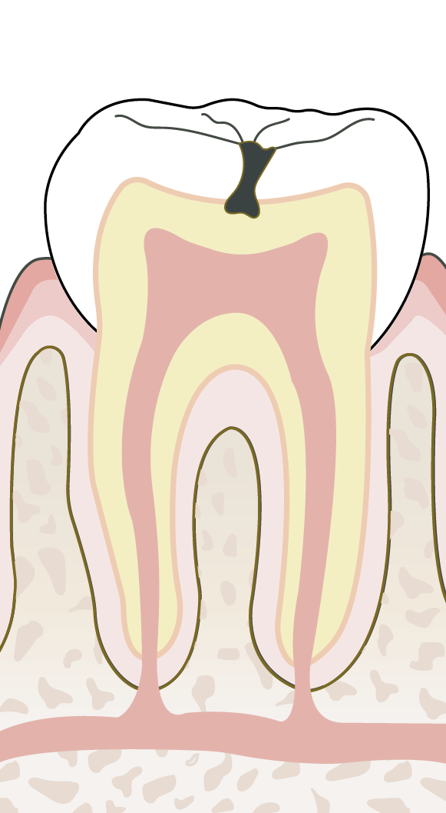
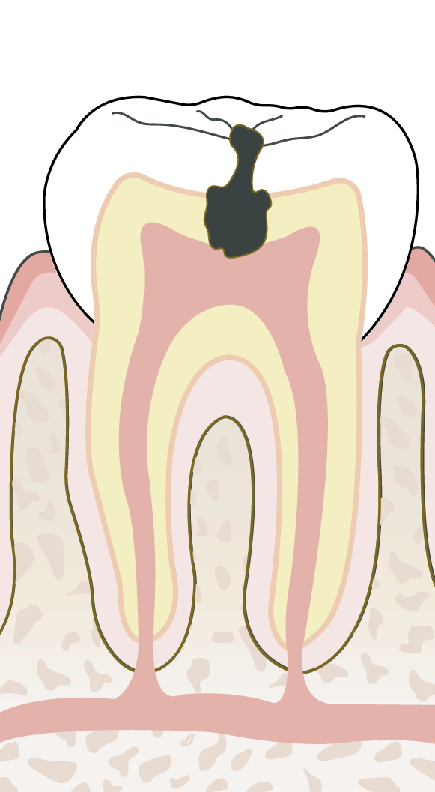
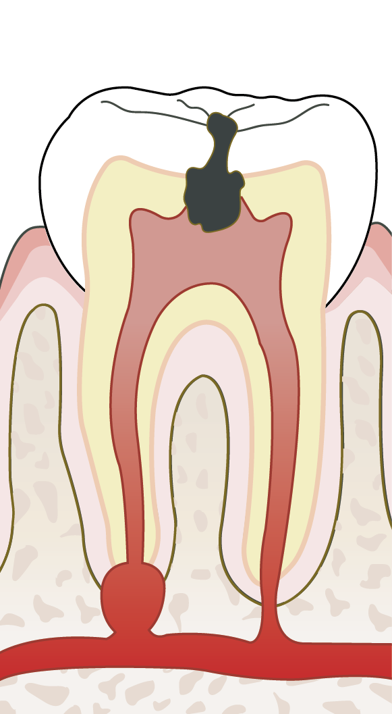
초기충치치료(레진)초기충치치료(레진)초기충치치료(레진)
초기 충치 치료, 레진
충치의 초기 단계인 치아의 법랑질에 충치가 생겼을 경우 간단히 제거하고 치과 충전물인 레진으로 채우는 치료입니다
치아 색과 유사한 색조를 구현하여 자연스럽게 진행합니다
BEFORE
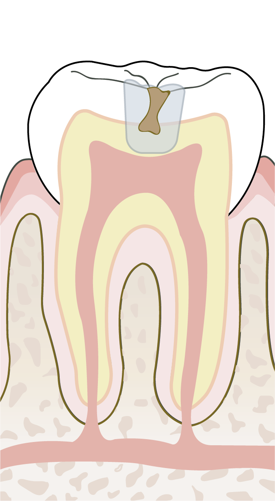
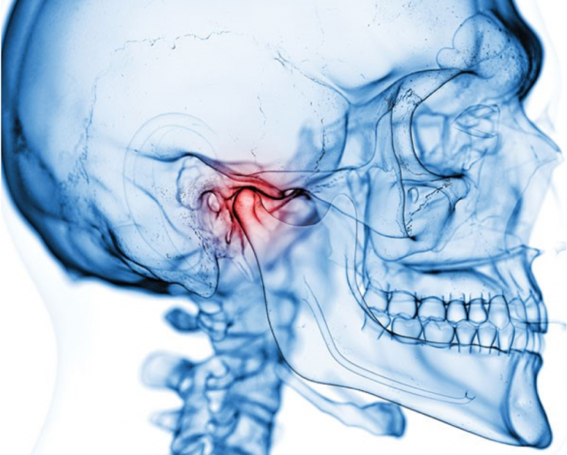
AFTER
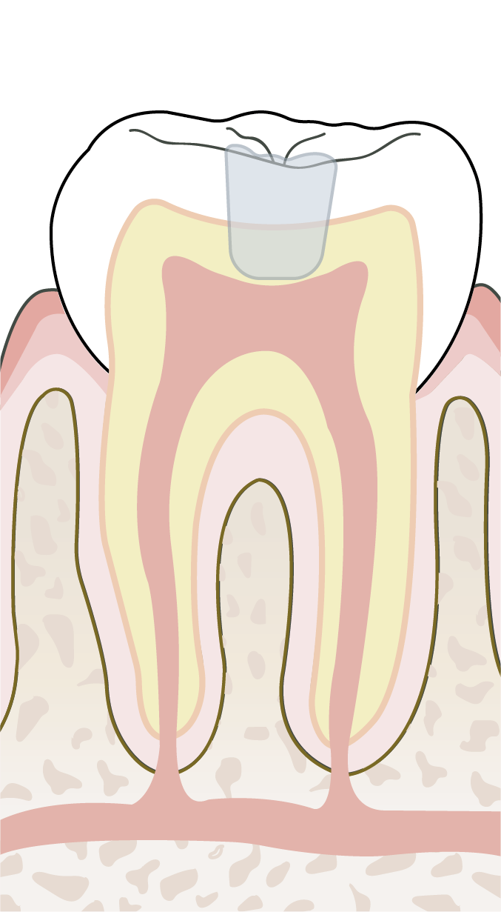
중기 충치 치료, 인레이/온레이
충치가 보다 진행되었을 경우 사용되는 시술 방법입니다
본을 뜨는 인상채득 후 기공 과정을 거쳐 정밀하게 부착하는 과정을 거치게 됩니다
BEFORE
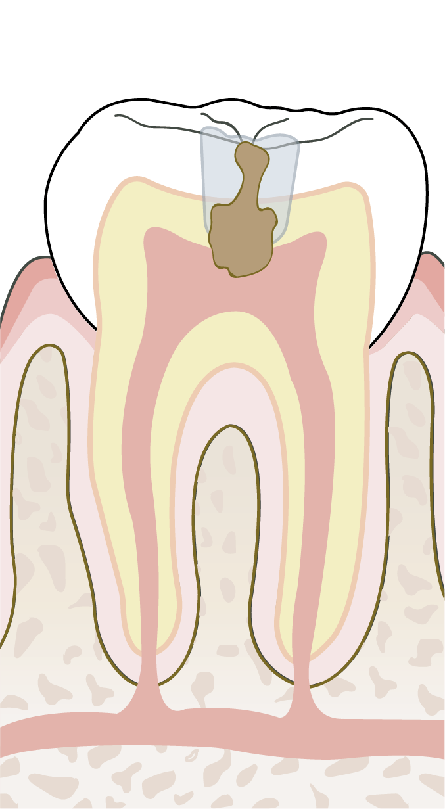
AFTER
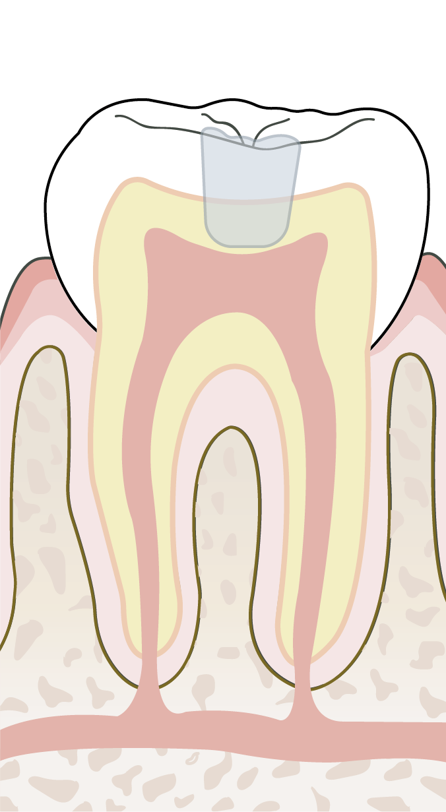
말기 충치 치료, 신경치료 + 보철치료
충치가 신경까지 진행된 경우 사용되는 시술 방법입니다
치아 내부에 신경과 혈관을 제거한 후 치과용 재료로 충전하여 신경치료를 진행하고 보철을 씌워줍니다
BEFORE
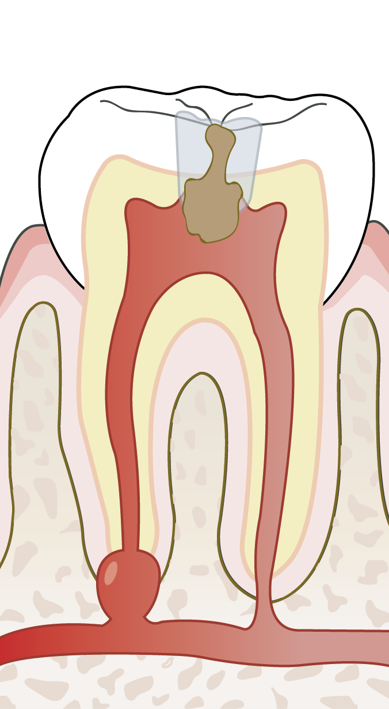
AFTER
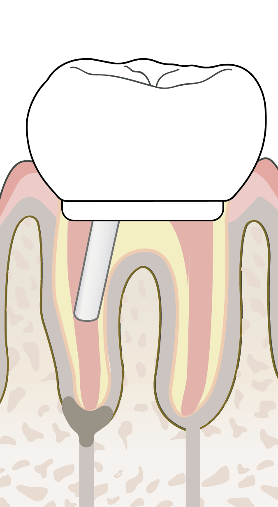
잇몸이 콕콕 아프세요?
대한민국 국민들이 가장 많이 앓고 있는 질환 2위 치주 질환, 흔히 풍치라고 알고 있는 잇몸 질환입니다
세균에 의해 잇몸에 염증을 발생시켜 부종, 출혈, 통증 등의 증상이 나타날 수 있으며
무엇보다 치조골을 파괴하여 발치에 이를 수 있어 치료가 꼭 필요합니다
치주염 진행에 따른 치료 방법
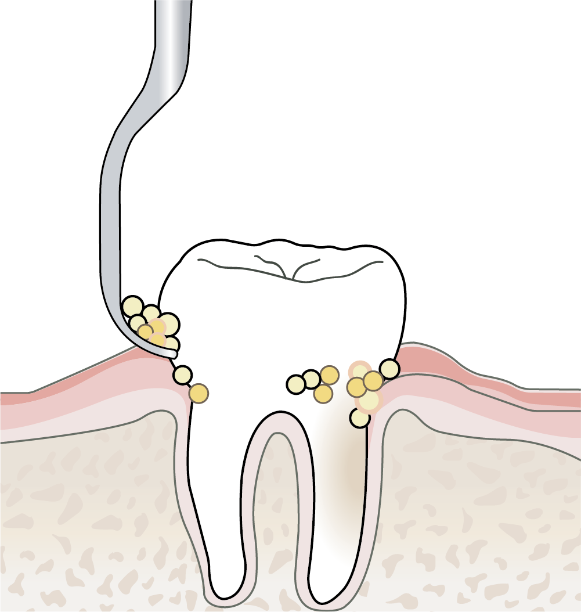
1단계스케일링
치아 표면에 붙어있는 플라그와 치석을 초음파 기구를 이용하여 제거하는 방법으로 가장 기본적인 잇몸 치료 방법입니다.
건강한 사람도 6개월에서 1년 주기로 받으시기를 권장 드리며, 술후 약간의 출혈과 시림 증상은 곧 사라지는 정상적인 과정입니다.
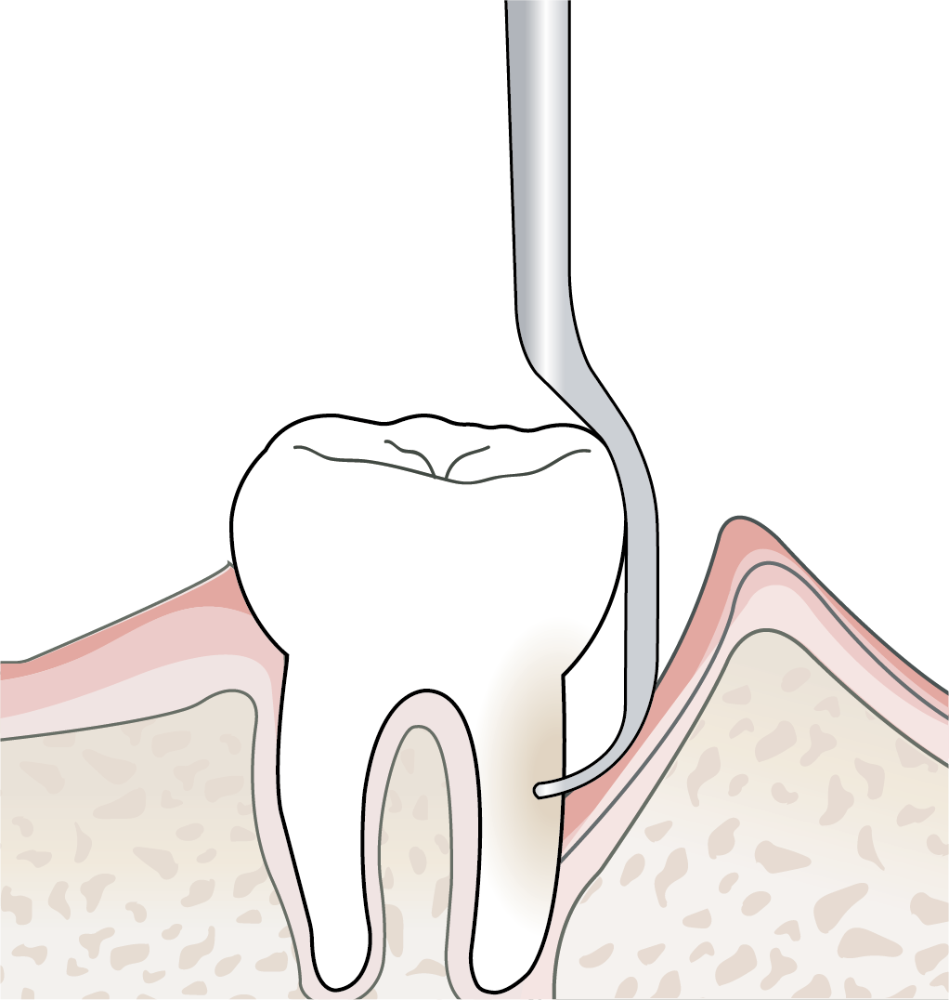
2단계잇몸큐렛
스케일링으로 제거되지 않은 염증 조직과 잇몸 아래에 있는 치석을 국소마취 후 기구를 이용하여 제거하는 잇몸 치료 방법입니다.
어느정도 치주염이 진행된 경우 진행하는 단계로, 상태에 따라 3회로 나누어 스케일링과 함께 진행합니다.
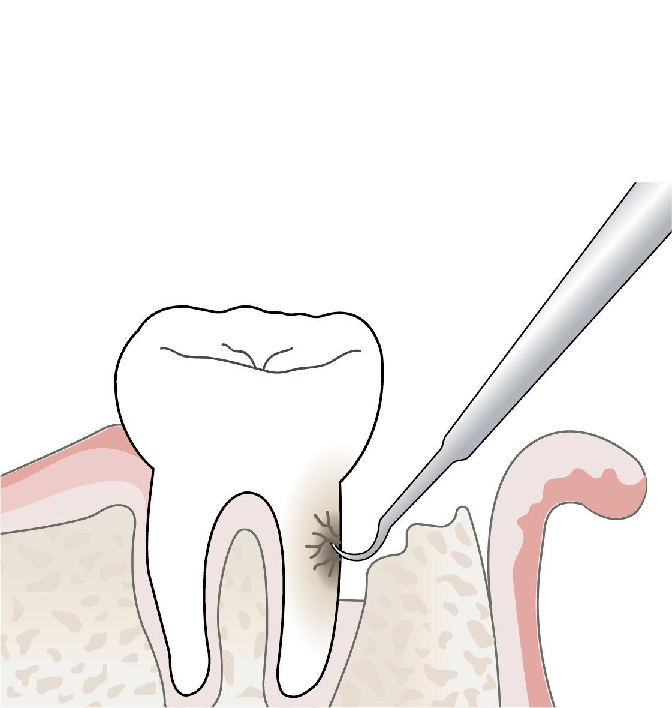
3단계잇몸수술
기구의 접근이나 시야확보로 인해 잇몸큐렛으로도 제거되지 못하는 염증조직과 치석들을 잇몸절개를 시행하여 진행하는 방법입니다.
불규칙한 잇몸뼈를 가지고 있거나 잇몸 너무 깊은 곳에 치석이 있는 경우는 치주 판막술로 진행합니다.
알고 계신가요? 스케일링도 의료보험이 된다는 사실 !
매월 1월 1일부터 12월 31일 사이
본인 부담금 1만원대로 만나보세요
스케일링적용대상
건강보험에 가입된
만 19세 이상 국민
본인부담금 1만원대적용주기
매년 1월 1일부터
12월 31일 사이
1회
건강하신 분도 6개월에서 1년 주기로 스케일링 받기를 권장드립니다
첨단 진단 장비를 이용하여 정확하게 !
매복사랑니는 유관으로는 단면만 보이기 때문에 안쪽으로 어떻게 생겼는지 알기 힘듭니다.
그래서 반드시 파노라마 사진촬영 및 3D CT촬영이 필요합니다.
사랑니가 신경관과 가까이 있어 신경손상의 위험이 높을 경우에는 3D CT촬영을 반드시 동반하여야 합니다.
그리고 반드시 치과 전문의에 의해 주의하여 발치해야 합니다.
통증이 없어도 사랑니 발치를 권해드립니다
사랑니는 10대 후반부터 맹출하기 시작하는 세번째 큰 어금니를 이르는 말로 바로 나지 못하고 누워있거나 바르지 못한 방향으로 나는 경우가 많으며 형태
이상을 보이는 경우도 많습니다. 이럴 경우 대부분 문제가 발생될 가능성이 높아 발치를 권해드립니다.